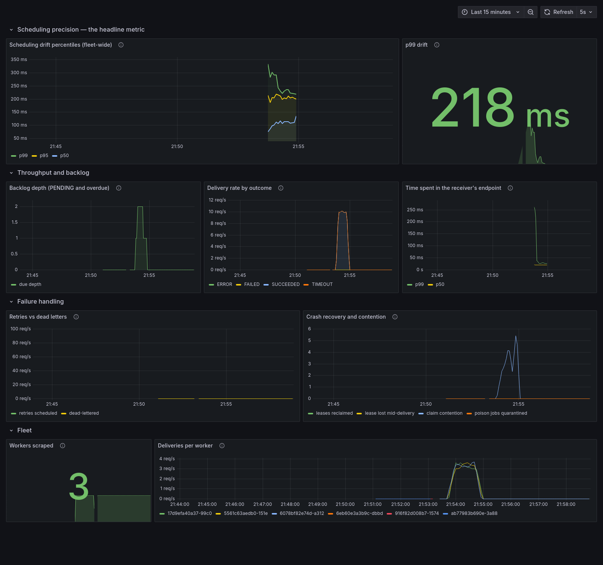

The problem
Run this job at 09:00 on Tuesday. Send it as an HTTP webhook. Now run several copies of the service so it survives a machine dying — without any of them firing the same job twice, and without losing a job when one is killed mid-delivery.
How it works
Every worker is identical. There is no leader, no queue, and no lock service.
Each worker runs three loops: poll every 200ms for due work, dispatch on virtual
threads, and reap expired leases every 10 seconds. Coordination is one atomic
findAndModify — two workers racing the same job, one wins the write, the other's filter
no longer matches. Scaling is adding containers.
The claim is only half of it. An atomic claim stops two workers starting the same job. It does nothing about a slow worker, whose lease expired mid-delivery, finishing one that has since been handed to someone else — and for a recurring job that silently deletes a firing, with no error anywhere.
So every terminal write re-checks that the worker still owns the lease. If it doesn't, the result is discarded rather than written. That is the difference between a duplicate delivery (expected, and handled) and a corrupted schedule (silent, and not).
Surviving failure
4,000 jobs, 5 workers, two of them SIGKILLed mid-run while holding 14 claims between
them. Every assertion below is checked against the receiver's log, not ours — our own records
are written after delivery, so a worker killed in between would undercount.
| Check | Result |
|---|---|
| Every job delivered at least once | 4,000 / 4,000 |
| Duplicate deliveries | 2 (0.05%) |
| Jobs fired before their scheduled time | 0 |
| Duplicates with a mismatched identity | 0 |
| Backlog left undelivered | 0 |
The two duplicates are the system being correct, not leaking. A worker killed after sending a request but before recording the result leaves a job whose lease expires and is legitimately re-delivered. That is unavoidable over an unreliable network — you cannot tell "the receiver processed it and the reply was lost" from "it never arrived."
What makes it safe is that both duplicates carried the same idempotency key as their original, so a receiver following the five-line verifier in the README collapses them back to 4,000 events.
Measured, not claimed

histogram_quantile over buckets summed across every worker.Why 236ms is the right number, not just a good one
Polling at interval T gives mean drift T/2 and worst case T. At a 200ms interval that predicts ~100ms and ~200ms. Measured: 106ms and 236ms. The design is behaving exactly as analysed — which is more informative than a smaller number would be.
The claim index, at 200,000 jobs
| Index | Per query | Keys examined | Size |
|---|---|---|---|
{status, nextRunAt} — equality before range | 1.2 ms | 1 | 2,136 KB |
{nextRunAt} — naive single-field | 161.2 ms | 190,001 | 2,132 KB |
{nextRunAt, status} — reversed | 160.3 ms | 190,001 | 4,496 KB |
Partial, PENDING only | 0.9 ms | 1 | 116 KB |
Compared against a reasonable index rather than against no index at all — beating a collection scan only proves indexes exist. The third row is the interesting one: it examines a single document, which is the statistic usually quoted, while walking 190,001 index keys and taking just as long as the naive version.
What I got wrong
The parts worth reading, because each was caught by something specific.
Two benchmarks measured nothing, and both looked fine. The first index comparison used a collection where every job was pending — under which every index performs identically. The first change-stream comparison reported a 60% improvement that was pure run-to-run variance, because the feature's trigger window was too narrow for it to have fired even once.
A counter recording how often the optimisation actually ran is the only reason that fabricated number didn't end up on a résumé. A latency feature that silently stops working has no other symptom — nothing errors, and the jobs still fire.
Three platform defaults failed silently. A framework upgrade renamed the database connection property, so every container connected to itself instead of the database. Metrics export was off by default, so the monitoring endpoint returned 404. The test library made replica sets opt-in, so the database under test was quietly the wrong kind. None of the three logged anything — all were caught by tests asserting the thing rather than assuming it.
Design decisions
Seven architecture decision records, one page each — what was chosen, what was rejected, and what it costs. Including why a message queue would have been the better answer for a different workload, and a known limitation left in place with the metric that should trigger revisiting it.
Run it yourself
git clone https://github.com/Pranay847/chronos-scheduler
cd chronos-scheduler
docker compose up -d --build --scale worker=3Dashboard at localhost:3000. Then kill workers mid-run and watch nothing get
lost:
./load/chaos.sh 4000 40 5 2